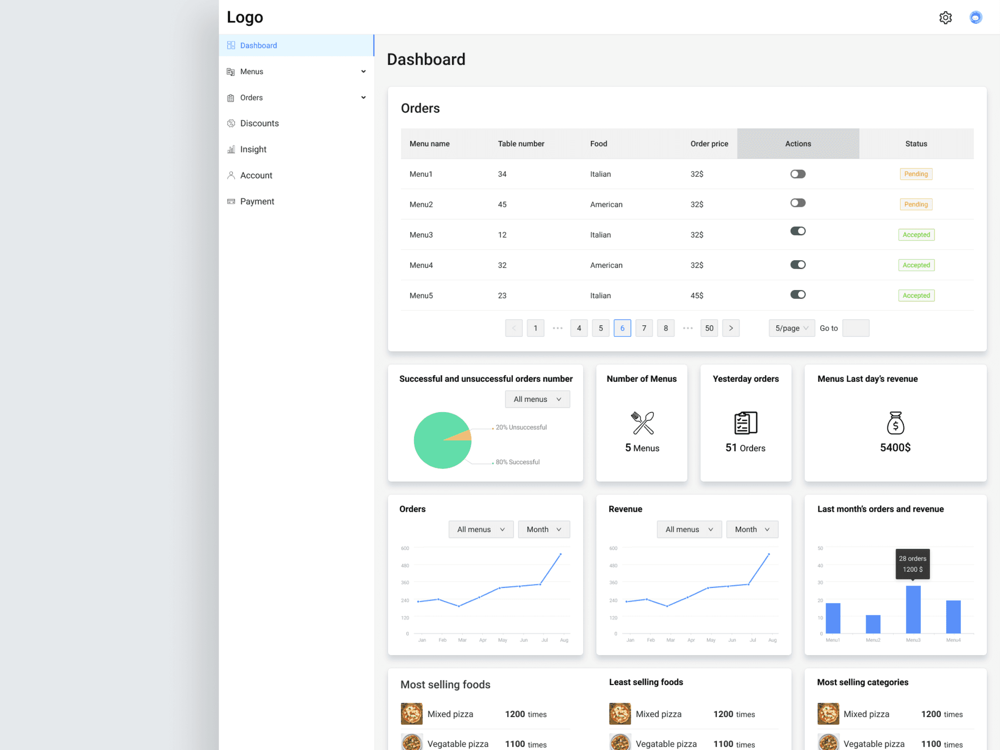
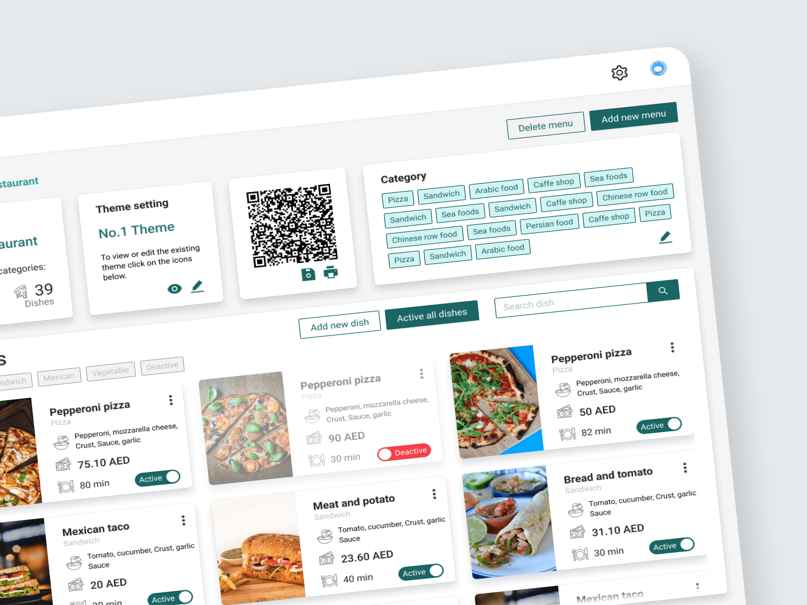
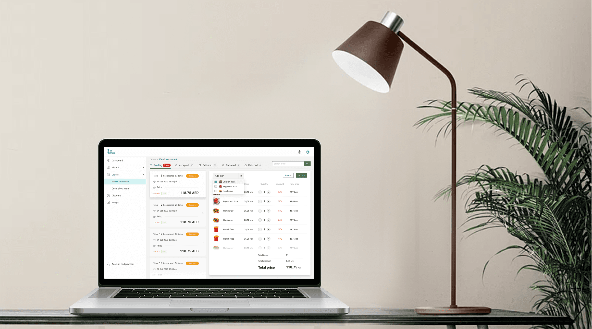
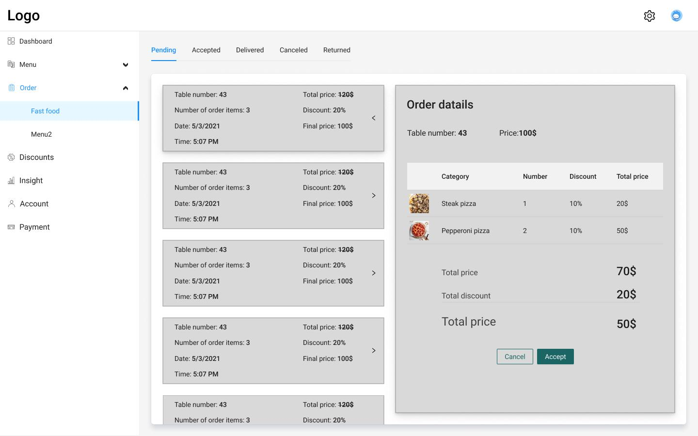
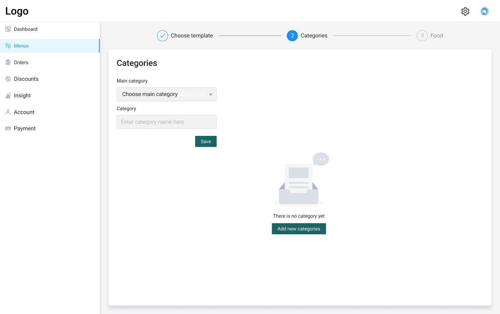
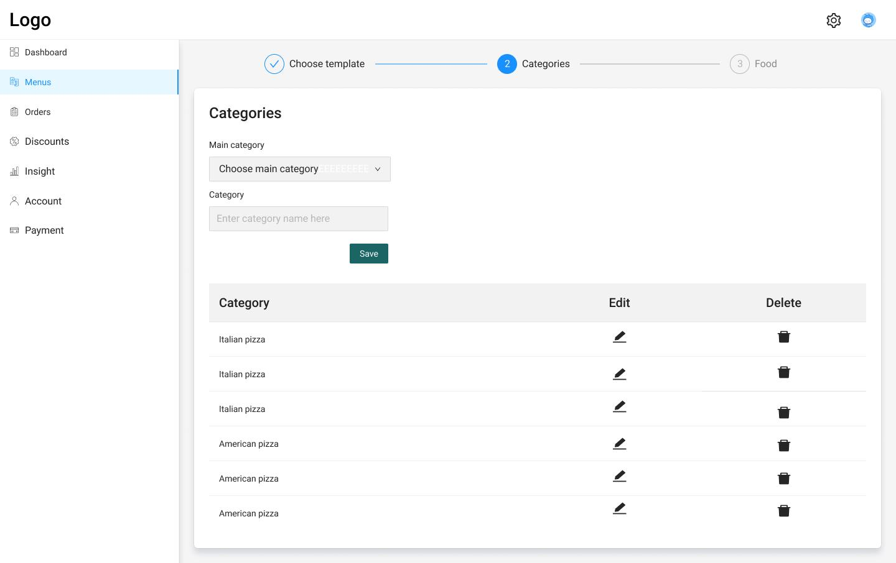

Background & Context
Restaurant staff constantly switch between incoming orders, menu updates, discounts, and business performance. Most management systems prioritize functionality over usability, making everyday operations slower than necessary.
Our objective was an organized, predictable, efficient dashboard without sacrificing powerful functionality.
My Role
As Product Designer, I led the process from early discovery to final implementation.
- Facilitated discovery workshops
- Mapped user flows and created low-fidelity wireframes
- Built interactive prototypes
- Designed a reusable Material-based design system
- Collaborated with developers during implementation
- Iterated from stakeholder feedback
Understanding the Challenge
Instead of jumping into interface design, we identified the largest usability issues in existing management systems through problem statements, design questions, success metrics, and competitive review.
Common patterns observed
- Left-sidebar navigation
- Card-based dashboards
- Table-driven order management
- Status-based filtering
- Modular information architecture
Design principles
- Reduce cognitive load
- Surface important information first
- Minimize unnecessary navigation
- Create reusable UI components
- Build for future features
Research & Discovery
We followed a lightweight Design Sprint: competitor review, Crazy 8 ideation, sketching, workshops, wireframing, prototypes, user testing, and iteration.

Building the Foundation
Low-fidelity wireframes helped validate navigation, information hierarchy, and operational workflows while allowing rapid iterations with developers.
Exploring visual directions
The first direction emphasized implementation efficiency through Material Design. The second used softer visuals, illustrations, and stronger feedback. The team selected the first because it reduced development effort, reused more components, was easier to maintain, and matched the timeline.

Information Architecture & Prioritization
The architecture organized daily operations around urgency and frequency. A prioritization matrix aligned the highest-value customer and staff tasks with implementation effort.

Designing the Core Experience
Order management
A split layout lets staff review incoming orders while editing them, reducing context switching.
Menu management
Inline editing, category organization, and reusable item components make dish management faster.
Dashboard and insights
Business metrics use lightweight cards and clear hierarchy instead of overwhelming reports.


Building a Design System
A reusable Material-based system covered color tokens, typography, grid, spacing, elevation, buttons, cards, dialogs, forms, tables, status chips, navigation, and icons. It improved consistency and let developers build screens faster.

Testing & Iteration
Prototypes were continuously reviewed with stakeholders and developers. Feedback focused on navigation, order workflow, information hierarchy, dashboard readability, and forms. Each iteration improved clarity before development.
Reflection
This project taught me that dashboard design is not about displaying more information—it is about helping people make faster decisions. Tight deadlines reinforced the importance of early wireframes, reusable systems, and collaborative design.